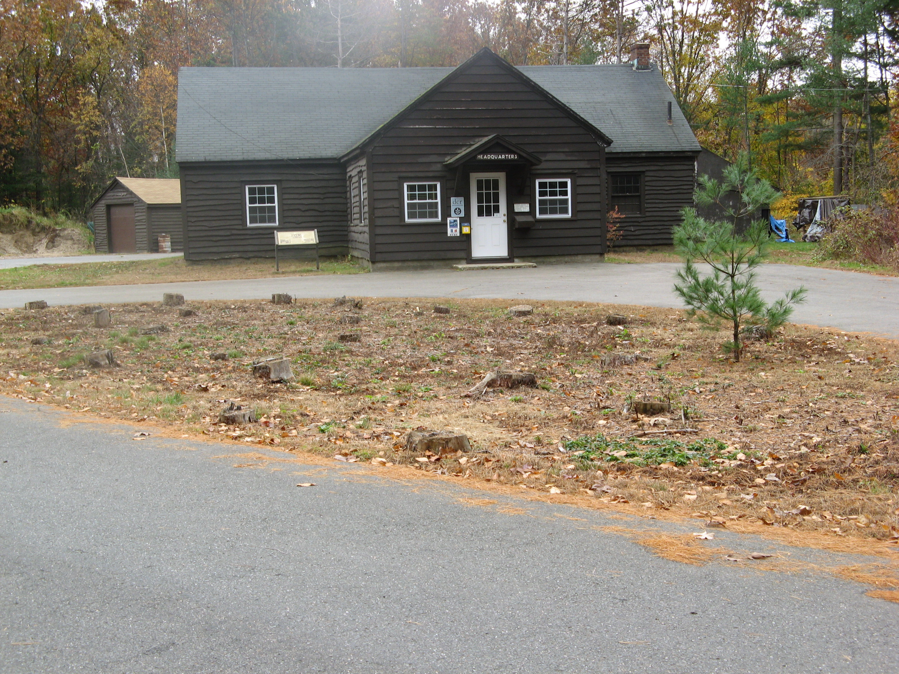
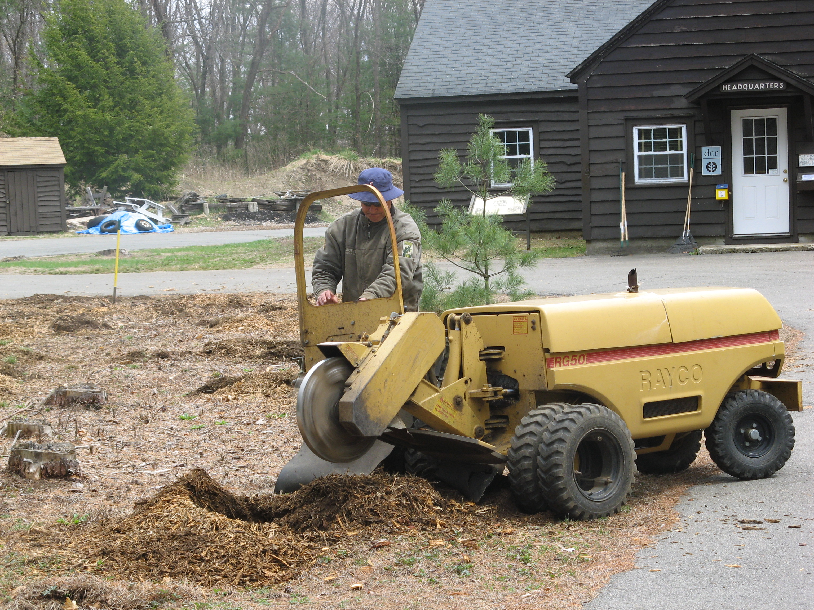
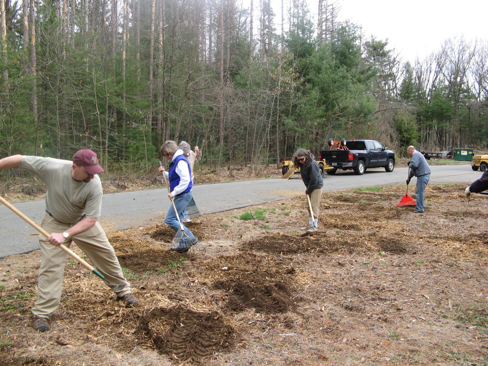
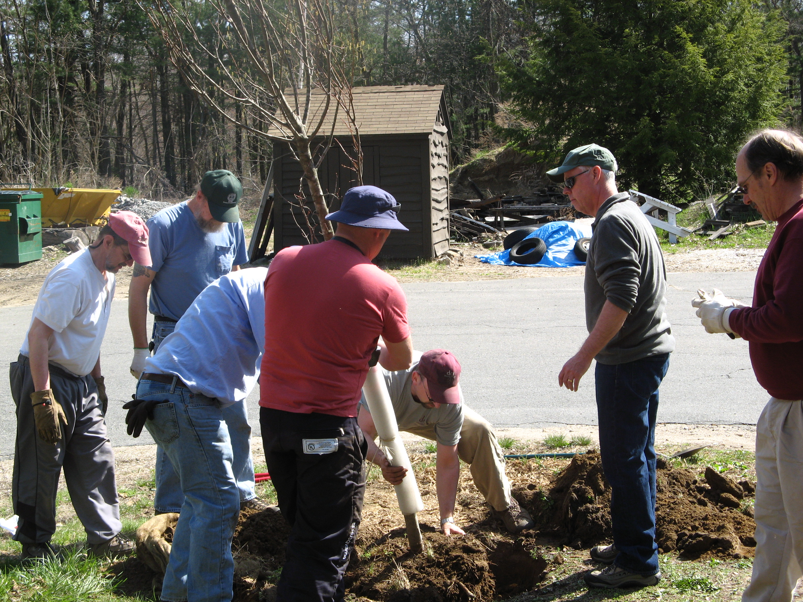
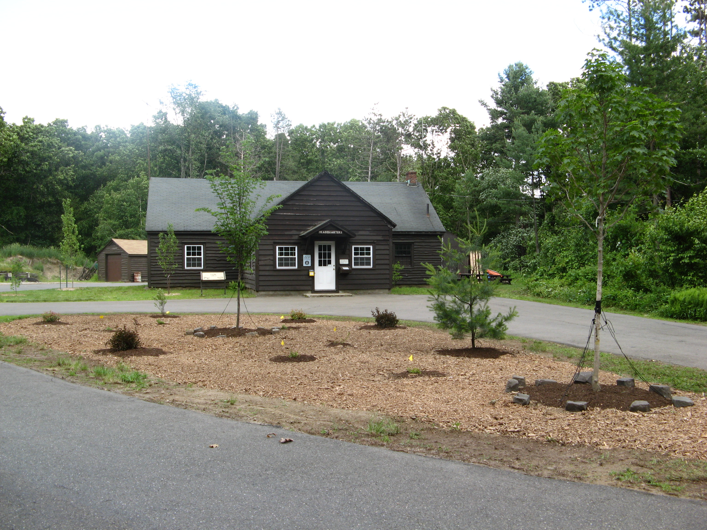

News
Tree Believers
It was 10 years ago, in January 2006, that citizens who loved Robinson State Park first saw paint on the trees and found out the state had a commercial timber sale planned in the park. A bond developed among the many people who were opposed to the timber sale, appreciated the park and wanted to keep it in its natural state. That connection among diverse supporters of the park developed into what is now the Friends of Robinson State Park. Mike Lydick, a free lance writer for the Agawam Advertiser News, wrote an engaging story of what is now the 10th anniversary of the Friends Group. We provide the link to the story here: http://www.turley.com/agawamadvertisernews/aan-archives/aan01.28.16.pdfh2
Robinson SP Day - Bird Walk
On Saturday, June 21, 2014, Steven Svec of the Allen Bird Club led a group through the park in search of birds.

Above, left-to-right: Dave, a participant on the walk; Rod Parlee, of the Bolton, CT Conservation Commission (who helps with the Rapid Stream Assessment), and Steven Svec, who led the walk.
Between 8:00 a.m. and 10:00 a.m., the group was not disappointed. Here is a list of all the birds they saw:
- Green Heron
- Mallard Duck
- Pigeon
- Mourning Dove
- Chimney Swift
- Ruby-throated Hummingbird
- Downy Woodpecker
- Red-bellied Woodpecker
- Northern Flicker
- Eastern Phoebe
- Great-crested Flycatcher
- Eastern Kingbird
- Red-eyed Vireo
- Blue-headed Vireo
- Black-capped Chickadee
- White-breasted Nuthatch
- Blue-gray Gnatcatcher
- American Robin
- Wood Thrush
- Gray Catbird
- Cedar Waxwing
- Pine Warbler
- American Redstart
- Louisiana Waterthrush
- Common Yellowthroat
- Scarlet Tanager
- Northern Cardinal
- Chipping Sparrow
- Song Sparrow
- Brown-headed Cowbird
- Common Grackle
- American Goldfinch
And here are the birds that Steve identified by ear, but no one saw:
- Eastern Wood Pewee
- American Crow
- Veery
- Yellow Warbler
- Magnolia Warbler
- Baltimore Oriole
Beautification Project
This is a picture of the “island” in front of the park headquarters where distressed and dying red pines had to be removed because they posed a threat to the building and to anyone nearby. This is our “before picture” All you see here are the remaining unsightly stumps and the lonesome but healthy white pine.

This is a photo of Matt Largess who brought his own stump grinder up from Rhode Island and ground out all the stumps!

Friends Group members and park staff helped to rake over the ground up stumps.

Matt has his back to the camera. A group of volunteers from the Friends Group and park employees helped to plant the trees. Then DCR Commissioner Richard Sullivan stopped by to lend his support.

This is the final finished project. Three trees are back to the left of the headquarters building. Three are on the island. The white pine had been left on the island, and we planted the five trees Matt donated It is the only place we know of where one can see the state trees of all 6 New England states in one place. If you visit the area now, you will see how the trees have grown since their planting.
Runners show character in the park
Original story via 22 News.AGAWAM, Mass. (WWLP) – Pioneer Valley Red Cross Hometown Heroes are chosen for having saved lives and helped improve the lives of others, while displaying strength of character. 22News shows you how two Agawam High School students sacrificed winning a race, when they helped someone on the opposing team who had suffered a seizure during the race.
“He had suffered a seizure, he was flushed, he was sweating, it didn’t look good,” said Sandra Land.
Hometown Heroes Sandra Land and Gina Lopez knew that by stopping to help the fallen cross country athlete from Belchertown High School, Agawam High School would forfeit the track meet at Robinson State Park last fall. They did the right thing.
“Gina going and getting help leading the people back to where I was with him, It seems that we lost the race in the end in the moment the face doesn’t matter,” said Land.
“I learned that anyone can rise to the occasion. You don’t have to be a doctor, you can check someone in the smallest way, by checking to see If they’re okay,” said Lopez.
Gina Lopez and Sandra Land made a decision that endeared them to Agawam Mayor Richard Cohen who nominated them as Hometown Heroes and to their proud coaches Bill Dillon and Carla Warner.
“Oh extremely, these two girls really stepped up at the right time, they did the right thing,” said Coach Dillon.
“In giving up her potential win against Belchertown, she gave back to a young man’s health and the integrity of her team,” said Carla Warner.